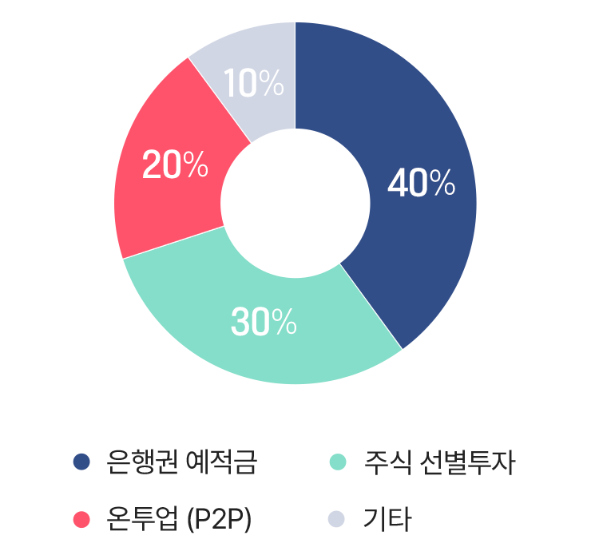
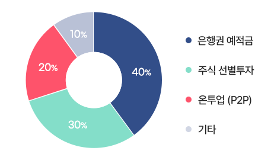
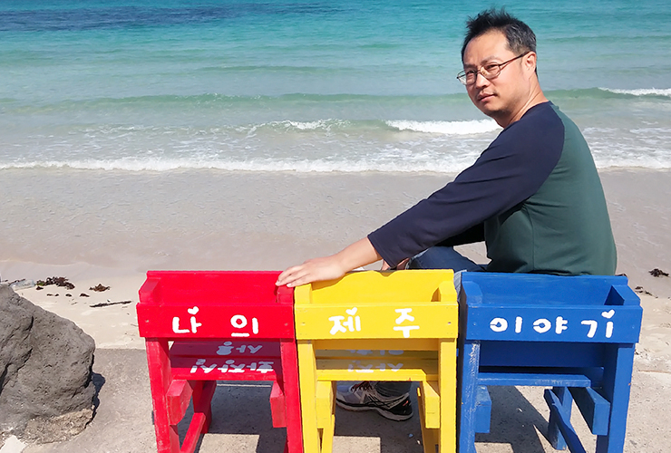
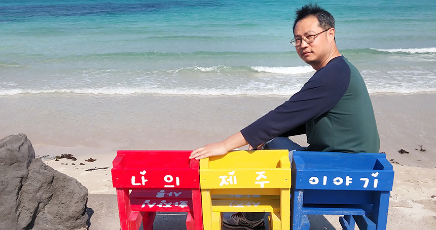

안녕하세요 헬로펀딩 투자자 신주용입니다.
저는 현재 서울에서 편의점을 운영하고 있습니다. 편의점 운영은 햇수로 약 7년 정도 하고 있는데 모두 그렇듯이 요즘 자영업 하시는 분들이 어려운데 근근이 버티고 나름 보람차게 살고 있어요.
투자 원칙은 헬로펀딩 같은 안정추구형 투자를 선호
은행의 고금리 특판상품은 거래 실적 위해 주식은 간접투자 형태로
저의 투자성향은 헬로펀딩처럼 안정 추구형이라고 할 수 있어요.
보통 높은 수익률 보다 상환과 추심 능력이 있는 헬로펀딩 같은 업체의 안전형 상품을 면밀히 분석하여 투자하고 있습니다.
앞으로도 이러한 투자 원칙은 계속 지켜 나갈 것입니다.
은행 같은 경우는 예금자보호가 되고 안정성이 있으니깐 빠른 정보를 통한 고금리 특판상품에 장기 투자하는 것이고, 주식투자는 직접투자보단 ELS 발행어음 등 간접투자 형태로 조금 하고 있어요.
원칙은 간단해요. 안전성 높은 은행은 추후 대출 이용을 위해서라도 거래실적을 만들기 위해 꾸준히 예적금을 하고 있으며, 주식투자도 최대한 원금 이상 보장되는 안정적인 상품을 선택하여 투자합니다.
신주용님의 투자 포트폴리오

투자금의 40%는 은행권(저축은행, 신협, 새마을금고 포함)의 특판 예적금에 예금자 보호한도 내에서 재투자를 반복하고 있습니다.
또 주식투자는 개별 주식 장기투자와 ELS 발행어음 등에 선별적으로 30% 비율로 하고 있으며,
온라인연계투자(P2p투자)에도 헬로펀딩 같은 안전한 업체에 개인 3천만원 한도 내에서 지속적으로 투자를 진행하고 있습니다.

온라인연계투자(P2P투자) 와의 첫 만남
헬로펀딩이 소상공인과 상생하는 모습이 좋았습니다.
과거 다른 업체에서 무슨 이벤트 있을 때 처음 투자했어요.
그때는 고수익에 엄청난 리워드를 보고 투자했었는데, 지금 생각해 보면 왜 그랬는지 웃음만 나옵니다. ㅠ
헬로펀딩의 경우 그전에 가입만 해놓고 지켜보다가 온투법이 시행되고 투자 업체 분석하고 물색하던 중에 헬로펀딩 SCF상품의 단기 상환 상품과 저처럼 빠른 자금 회전이 필요한 자영업자들을 위해 회전자금을 융통하는 것에 이끌려 투자하게 되었습니다. 헬로펀딩이 어려운 소상공인과 함께 상생하는 모습 무척 보기 좋았습니다.^^


유동성 확보 잘되고 자금 회전이 잘되는 SCF상품 최고!!
깔끔한 유저 친화적 인터페이스가 좋아요!!
예전에는 다른 상품도 투자했지만 지금은 (상품이) 거의 SCF 소상공인 매출이 메인이 되어서, 이 상품에 투자 한도 내에서 빠르게 투자하고있어요.
아무래도 2-3일 내에 빠르게 상환 되니깐 돈의 회전이 좋아서 유동성 확보에도 좋고 앞으로도 꾸준히 자금 있을 때마다 투자할 예정입니다.
SCF소상공인 매출채권상품이 다시 말씀드리지만 정말 맘에 들어요. 어려운 분들에게 유동성지원은 언제든 재투자 합니다.
그리고 헬로펀딩의 깔끔한 유저 친화적 인터페이스가 아주 좋습니다. (VERY GOOD!)
홈페이지가 개편되고 투자가 편해져서 더 좋고요.
저는 헬로펀딩이 계속 영업을 하는 한 그리고 지금의 상품을 유지하는 한 지속적으로 투자할 것입니다.
소상공인 매출채권 외에 다른 상품 출시되면 이 부분도 투자 의향이 있습니다.
한 달 세 후 수익 10만원 이상!!
헬로펀딩을 추천합니다!!
연 12프로 초 단기 상품이 그렇게 많지가 않아요.
헬로펀딩은 안전성이 그래도 타 업체보단 많이 담보되기에 처음에는 소액으로 투자해 보고 이후에 점차 포트폴리오에 담아서 장기적으로 투자해 보시길 권합니다.
저도 한 달에 수익이 세 후 10만원 이상 목표로 투자하는데 어렵지 않게 달성하고 있습니다.
자금의 회전율이 빠른 부분을 십분 이용한 투자하시길 조언 드립니다.
나에게 헬로펀딩이란?
영원한 동반자~~
함께 성장하고 꿈에 한걸음 다가가게 해주고 뭔가 투자하면서 내가 살아가고 있다고 느끼게 해준 고마운 최고의 파트너입니다.
함께라서 고마워요!!